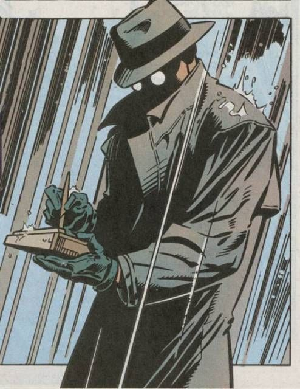

Especial
Ar pesado e nuvens cinzas, a eterna tendência
Parece que está buscando uma ideia de exercício, não é?

Esta página usa um evento do JavaScript. Quando o navegador termina de carregar tudo, o evento onload chama a função saudacao(), que abre uma caixa de diálogo com os dados do aluno.
A função pega a hora do computador e escolhe entre Bom Dia!, Boa Tarde! ou Boa Noite!. Também descobre o dia da semana e escreve na última linha, por exemplo: Hoje é sexta-feira.
Cada informação fica em uma linha da caixa. Para quebrar a linha dentro do alert() foi usado o \n no meio do texto.